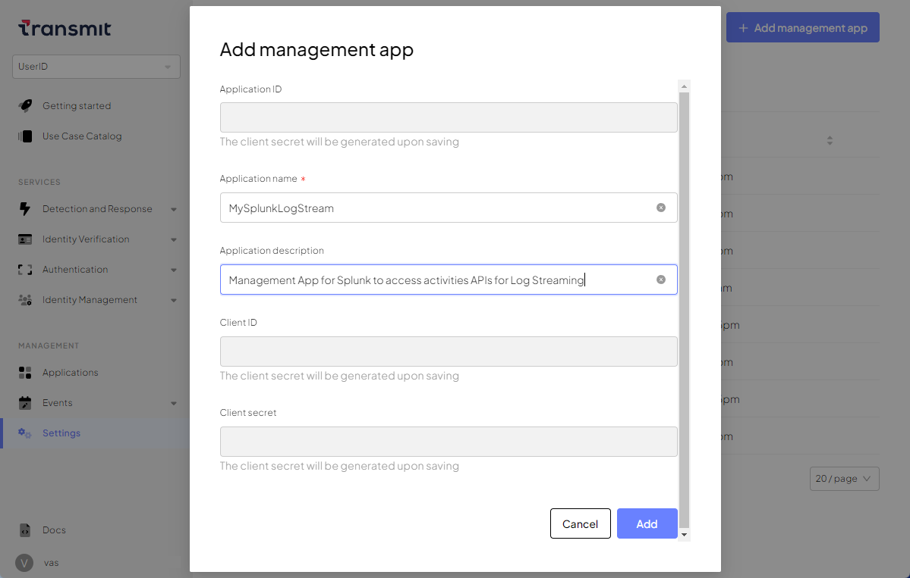
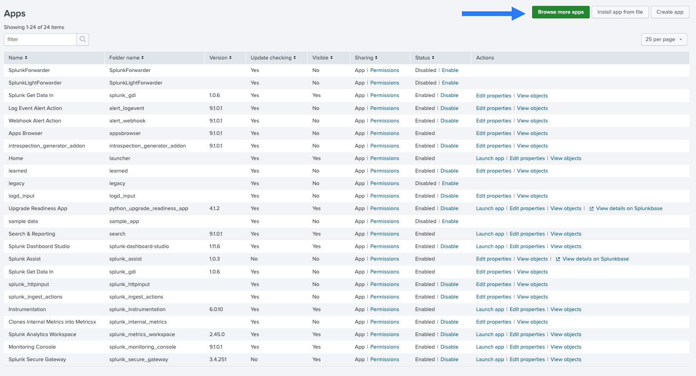
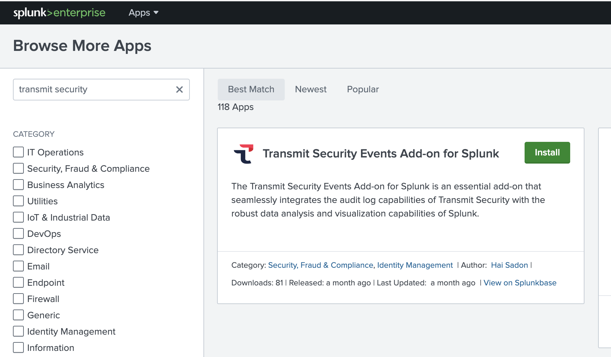
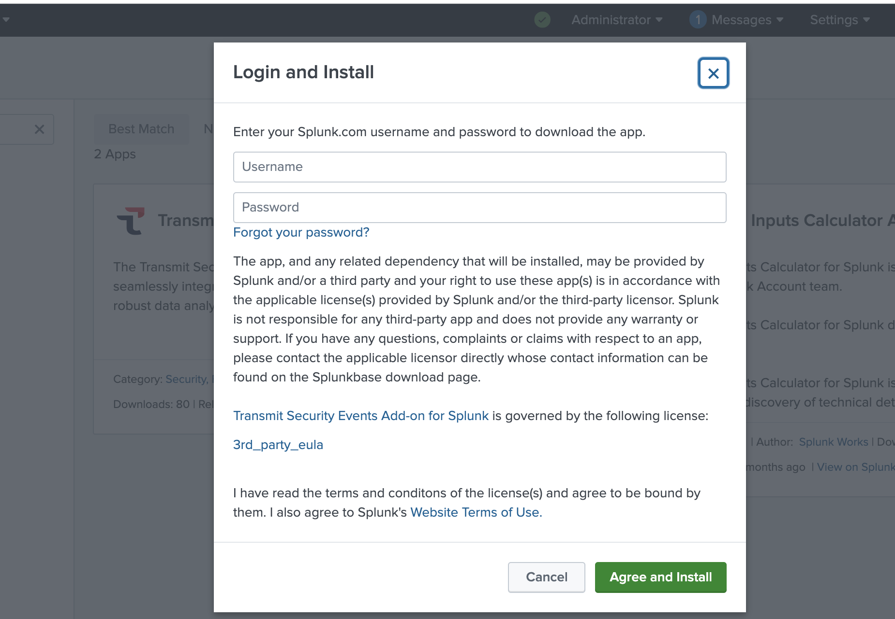
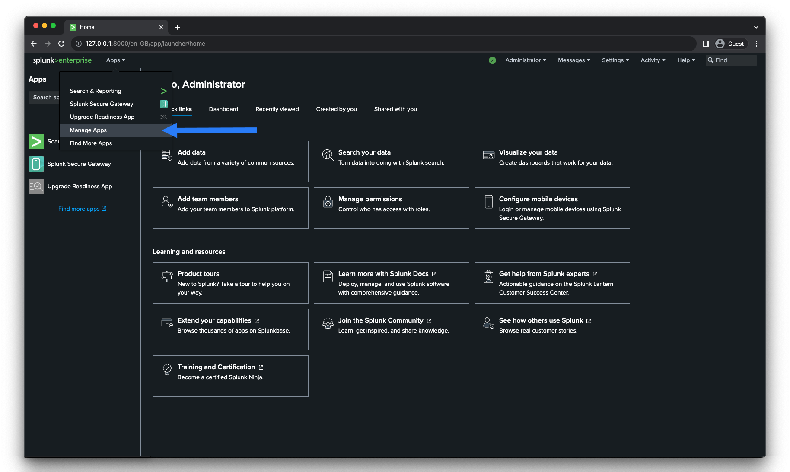
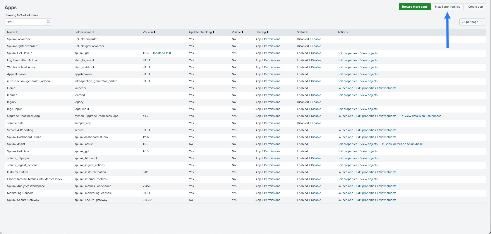
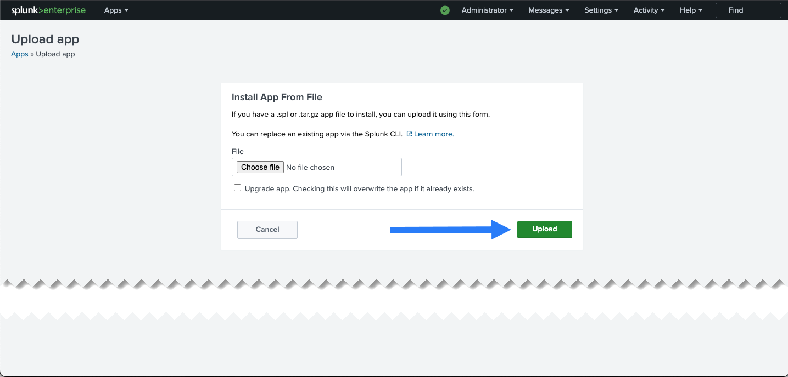
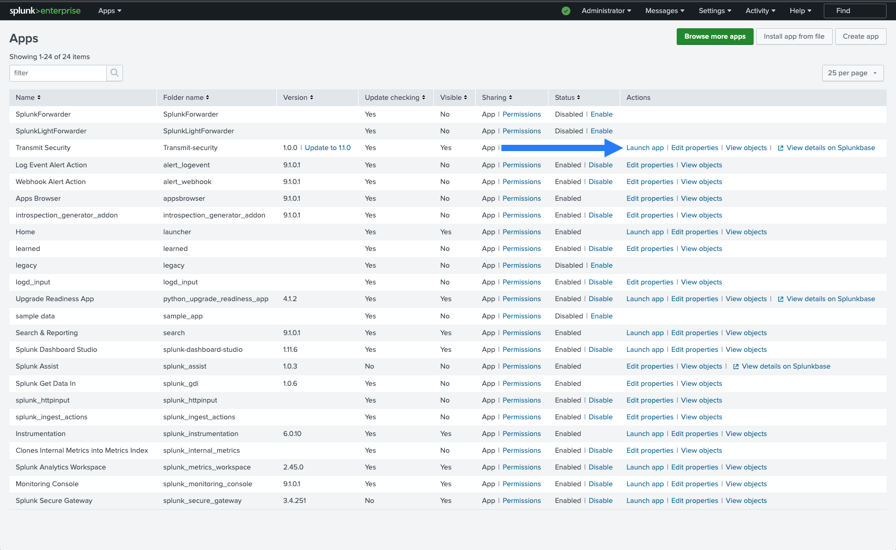
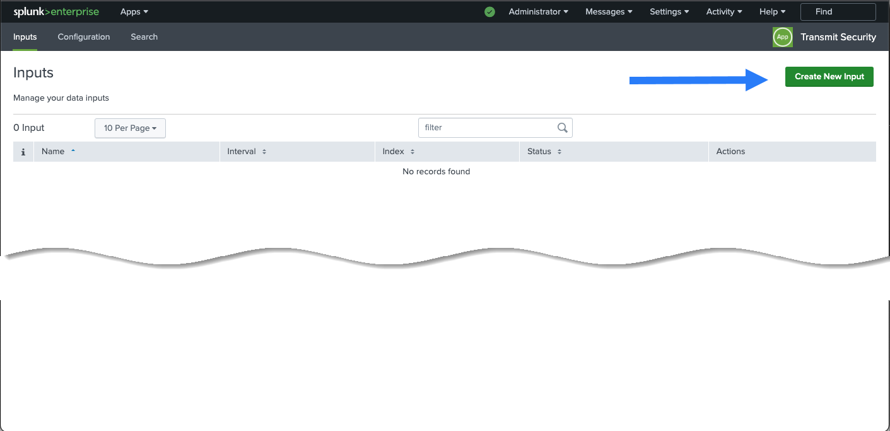
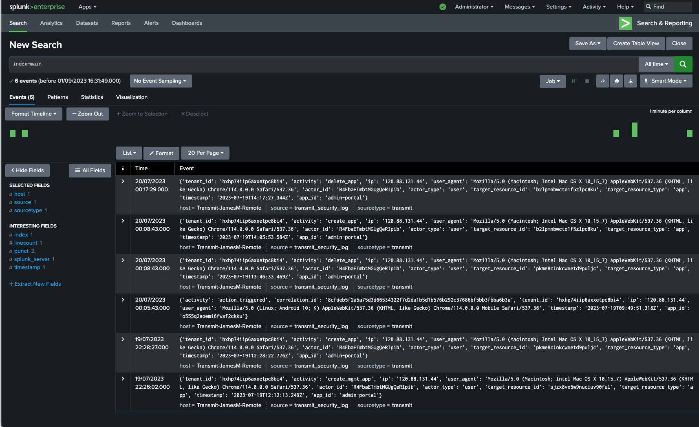

Feed audit logs to Splunk
You can feed data to Splunk via Transmit Security Events Add-on . This plugin will help you keep track of user and admin activity by polling Audit Logs API.
Step 1: Configure a management app
In your Transmit Security tenant, configure a management app. Give the app a suitable name, for example, MySplunkLogStream.

Note
After saving the management app, open it again and note the Client ID and Client Secret values. You’ll need these parameters to install the Splunk App.
Step 2: Install the plugin
You have the following options:
- Install the plugin directly from Splunk portal. This option supports both Splunk Enterprise and Splunk Cloud environments.
- Download the plugin and install it manually. This option only supports Splunk Enterprise environments and doesn't work for Splunk Cloud users.
To install the plugin from Splunk portal:
- While logged in, go to Apps > Manage Apps, then click Browse more apps:
 - Search for Transmit Security Events Add-on:
 - Click Install on the Transmit Security Events Add-on tile.
- Log in with your Splunk username and password: 
- Restart Splunk.
To install the plugin manually (only in Splunk Enterprise environments):
- Download Transmit Security Audit Log Connector for Splunk.
- On Splunk portal, go to Apps > Manage Apps:
 - Click Install App from File:
 - Upload the file you've downloaded from Splunkbase:

After installation, the browser redirects you to the Apps page. This page now shows Transmit Security on the app list.

Step 3: Configure the inputs
Now you need to launch the app and configure the following inputs:
- Inputs for User Activity (logins, etc.)
- Inputs for administrative audit logs: application created, group created, and so on
To configure the inputs:
- Launch the app from the Apps page.
- Click Create New Input: 
- Configure and update the User Activity inputs:

- Name: Give the input a meaningful name, for example,
Transmit_User_Events. - Interval: Enter polling interval in seconds.
- Index: Use your preferred index; for example, you can choose
defaultormain. - OAuth Endpoint: Token exchange endpoint:
https://api.transmitsecurity.io/oidc/token(api.eu.transmitsecurity.iofor the EU andapi.ca.transmitsecurity.iofor Canada). - Endpoint - Use the following value:
https://activities.transmitsecurity.io/v1/activities/user(activities-query-service.identity.securityfor the EU andactivities.ca.transmitsecurity.iofor Canada). - Client ID and Client Secret: Use the values from the Management App you've created in the Transmit portal earlier.
- Name: Give the input a meaningful name, for example,
- Repeat step 3 for the Admin Activity inputs. Use the endpoint
https://activities.transmitsecurity.io/v1/activities/admin(update the base URL for EU / CA), and the same Client ID / Client Secret values as in step 3.
Note
When defining the polling interval, consider the level of activity on the platform. For instance, you may want to use a longer polling interval, like 3600 (1 hour), for low traffic or a shorter interval, like 300 (5 minutes), for high-traffic situations.
Step 4. Check the operation
Check how the connector works using the Search app. Include sourcetype=transmit in the search bar. If the search isn't working, restart Splunk.
